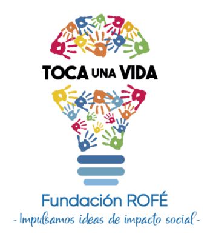

"-Impulsamos ideas de impacto social-"
"Si quieres cambiar el mundo, toca una vida"
Once iniciativas estratégicas ordenadas de forma lógica para escalar de manera sólida. El ecosistema se construye de adentro hacia afuera: consolidando la base de datos, automatizando los flujos internos y escalando la visibilidad exterior.
La base de datos sobre la que se apoya todo el ecosistema institucional.
Fundación de todo el ecosistema. Sin una base de datos estructurada, el resto de las automatizaciones carecen de estabilidad en el tiempo.
Filtrar dominios distintos a Gmail y corregir errores comunes de digitación. Garantiza una base de datos sana antes de desplegar flujos automáticos.
Permite utilizar modelos de IA con datos reales del proyecto sin exponer información confidencial de las participantes. Habilita múltiples casos posteriores.
Procesos operativos y flujos de información que empiezan a correr solos.
Al expirar el tiempo de vigencia de la información, mover el registro de forma automatizada directamente hacia la base de datos destino.
Rediseñar la estructura de preguntas para capturar datos más limpios, accionables y estructurados. Ayuda directamente a nutrir los análisis de deserción.
Mapear y entender patrones por los cuales las participantes no continuúan al siguiente nivel. Requiere llamadas de seguimiento combinadas con análisis cualitativo.
Aplica de manera transversal tanto para el flujo general de agendamiento de reuniones como para la apertura automática de salas recurrentes.
Publicación, automatización de contenidos y difusión hacia el exterior.
Configuración para que las salas virtuales de los paneles se habiliten de manera automática 15 minutos antes de la hora programada.
Sincronización automatizada entre las hojas de control y el portal oficial público. Depende directamente del éxito de la migración a base de datos en la Fase 1.
Flujo automatizado: descarga de la grabación de Zoom, subida optimizada al canal de YouTube institucional y actualización automática del enlace en el sitio web.
Generación desatendida de imágenes informativas básicas mediante plantillas (Canva/IA) y su publicación programada en canales oficiales.